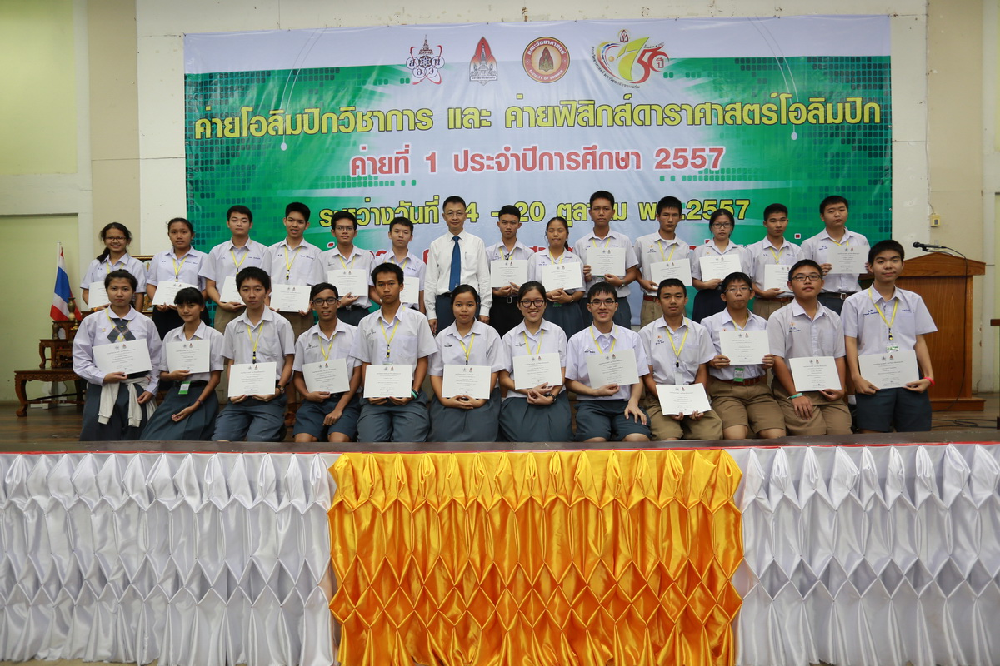

ข่าวอบรม-สัมมนาวิชาการ
พิธีปิดค่ายโอลิมปิกวิชาการและค่ายฟิสิกส์ดาราศาสตร์โอลิมปิก ค่ายที่ 1 ประจำปี 2557

เมื่อวันที่ 20 ตุลาคม 2557 คณะวิทยาศาสตร์ มหาวิทยาลัยขอนแก่น ได้มีพิธีปิดโครงการค่ายโอลิมปิกวิชาการและค่ายฟิสิกส์ดาราศาสตร์โอลิมปิก ค่ายที่ 1 ประจำปีการศึกษา 2557 ณ ห้อง 3201 อาคารวิทยาศาสตร์ 03 โดยมีผศ.ดร.สมเกียรติ ศรีจารนัย คณบดีคณะวิทยาศาสตร์เป็นประธานพร้อมมอบเกียรติบัตรแก่คณะนักเรียนที่เข้าร่วมโครงการค่ายฯดังกล่าว ซึ่งแบ่งออกเป็น 5 สาขาวิชาได้แก่ สาขาวิชาฟิสิกส์ 29 คน สาขาวิชาฟิสิกส์และดาราศาสตร์ ม.ต้น 33 คน สาขาวิชาฟิสิกส์และดาราศาสตร์ ม.ปลาย 30 คน สาขาวิชาเคมี 34 คน สาขาวิชาชีววิทยา 27 คน สาขาวิขาคณิตศาสตร์ 3535 คน และสาขาวิทยาการคอมพิวเตอร์ 35 คน รวมทั้งสิ้น 223 คน และจะคัดเลือกสาขาลพ 20 คน เพื่อเข้าร่วมค่ายที่ 2 ต่อไป คณบดีฯกล่าวว่า " ในนามของคณะวิทยาศาสตร์ มหาวิทยาลัยขอนแก่น ขอขอบคุณ คณาจารย์ คณะทำงาน คณะผู้สังเกตการณ์จากโรงเรียนต่างๆทุกท่าน ที่ได้ร่วมกันดำเนินกิจกรรมอันสำคัญในครั้งนี้ ขอให้นักเรียนทุกคนจงประสบความสำเร็จในการสอบคัดเลือกจากค่ายที่ 1 เพื่อเข้าสู่ค่ายที่ 2 ที่กำลังจะดำเนินการในช่วงเดือนมีนาคม 2558 และหวังเป็นอย่างยิ่งว่า คณะครูและนักเรียนทุกคนที่ได้ร่วมกิจกรรม โครงการค่ายโอลิมปิกวิชาการ(ค่ายที่1)และโครงการค่ายฟิสิกส์ดาราศาสตร์โอลิมปิก(ค่ายที่1) ประจำปีการศึกษา 2557 จะนำความรู้ที่ได้รับในการเข้าค่ายโครงการดังกล่าว ไปพัฒนาให้เกิดประโยชน์แก่โรงเรียนของท่านต่อไป สุดท้ายนี้ ขอให้ทุกท่านเดินทางกลับภูมิลำเนาโดยสวัสดิภาพทุกคนครับ"